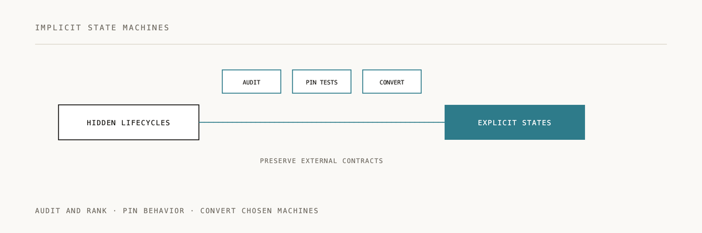

implicit-state-machines

An agent skill that finds implicit state machines in a codebase, ranks them by bug risk, and converts the chosen ones to explicit state with tests.
An implicit state machine is a lifecycle the code enforces by convention. The states and legal transitions exist, but nobody wrote them down, so illegal states are reachable. Typical signs: an order that is both refunded and shipped, a spinner that never stops, a job that runs twice after a cancel.
What the skill makes an agent do
The skill has two phases.
Phase 1, audit. The agent reads the code and changes nothing. It writes a ranked report: one section per machine, with states, transitions, reachable impossible states, and a recommendation (convert, convert lightly, or leave alone). It then stops and asks which machines to convert.
Phase 2, convert. The agent converts one machine at a time:
- It writes tests that pin the machine's current behavior, and commits them alone.
- It converts the machine to an explicit form: an enum, a transition table, a constraint.
- It keeps external contracts stable: API shapes, columns, stored values, existing tests.
- It commits the conversion alone, with a conversion record in the repo docs.
The skill also covers the cases where agents cut corners:
| The request says | The skill's answer |
|---|---|
| "Find and fix, don't wait on me." | The report is committed first. Then only machines with money, data, or user-visible impact are converted. |
| "The existing tests cover it, skip the pins." | The agent checks that claim against the audit and writes the missing pins. |
| "Rename this status while you're in there." | A stored value is a contract. Without an approved migration it stays, and the agent says so. |
| "One commit is fine." | Each machine gets a pins commit, then a conversion commit. |
Read SKILL.md for the full rules. It is the only file an agent needs.
Install
Copy SKILL.md into a folder named implicit-state-machines in your skills directory. For
Claude Code that is ~/.claude/skills/ for every project, or .claude/skills/ inside one
repository.
mkdir -p ~/.claude/skills/implicit-state-machines
cp SKILL.md ~/.claude/skills/implicit-state-machines/
Copy SKILL.md alone. Do not copy evals/: it holds the answer key for the tests, and an
agent that can read it grades its own work against it.
Use
Ask in plain words. These requests should load the skill:
- "Audit this repo for implicit state machines."
- "Some orders show as refunded and shipped at the same time. How does the code allow that?"
- "The status column gets written from nine places. Is that a problem?"
- "Find the state bugs in this repo and fix them."
For a conversion, name the machines: "Convert the order lifecycle from the audit in
docs/state-machines.md."
What you get back:
- After an audit: a ranked report with a summary table, a "leave alone" list with reasons, and a question about which machines to convert. No code changes.
- After a conversion: per machine, a tests-only commit and a conversion commit. The repo docs gain a conversion record for each machine: pins, impossible states closed, behavior changes, choices made without you, contracts, stored impossible rows, open decisions, and what was not verified. The final message lists the open decisions and the unverified items.
Decisions the skill makes for you
Three rules are judgment calls. Change them in SKILL.md if you disagree, then run the evals.
- "Don't wait on me" converts without asking. The agent commits the report, then converts the high-impact machines. It does not stop after the report.
- "Skip the tests" is checked, not obeyed. The agent compares the existing tests with the audit and writes pins for what they miss.
- A missing stored state stays missing. If a machine needs a state the storage cannot hold, the agent leaves that behavior as it is and lists it as an open decision. It does not add a column, and it does not hide the state inside another one.
Layout
SKILL.md the skill
README.md this file
evals/ behavior tests for the skill (never ship or link from SKILL.md)
README.md how to run and grade, and what is planted in the fixture
RESULTS.md measured results, and what is not fixed or not tested
run.py runs scenarios headlessly against a version of the skill
grade.py checks commit order, probes the converted code, checks the records
route.py tests whether the description line routes requests to this skill
scenarios.json the four scenarios
routing.json the routing cases and neighbor skills
fixture/ a small Python shop backend with planted machines and decoys
overlays/ files added to the fixture for some scenarios
arms/ earlier versions of the skill, kept for comparison
Change the skill
Treat SKILL.md as code and the evals as its tests.
- Find or write a scenario that shows the failure. Run it against the current skill and read the runs. If the current skill does not fail, do not add guidance.
- Copy the current
SKILL.mdtoevals/arms/under the next version name. - Make the smallest edit that addresses the failure you saw.
- Run the scenarios again with
--reps 5and grade them. Two reps hid two real slips once. - If you change the description line, run
evals/route.pybefore and after. - Record the result in
evals/RESULTS.md.
uv run --no-project python evals/run.py --out <dir outside the repo> --arm new=SKILL.md --arm old=evals/arms/v3.md --reps 5
uv run --no-project python evals/grade.py <that dir>
Runs call claude -p and spend subscription quota: about 20 to 55 cents per Sonnet run in the
recorded results. See evals/README.md for the details and ../gotchas.md for the harness
pitfalls.
Known limits
evals/RESULTS.md holds the full list. The main ones:
- The audit phase shows no gain in detection on the fixture. An agent with no skill finds the same machines. The skill's gain there is the form of the report and the stop before changes.
- The fixture is small and in one language. Nothing tests a large repository, a typed language, or front-end flag clusters.
- No test has the user present and answering questions.
- The tests put the whole skill in the prompt. They do not test whether an agent loads the skill body in a real session.